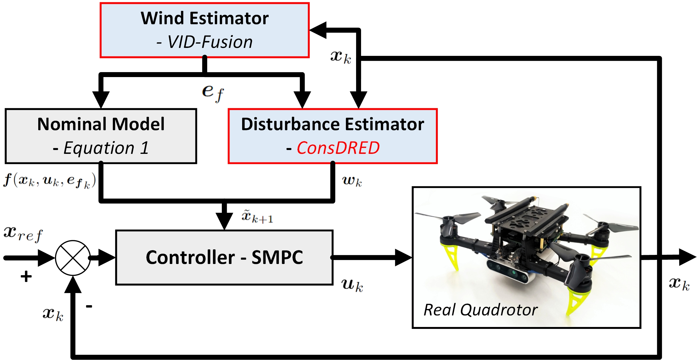

Method

System overview of ConsDRED-SMPC:
We propose Constrained Distributional REinforced-Disturbance-estimation for Stochastic MPC (ConsDRED-SMPC), a systematic, trustworthy and feasible quadrotor trajectory tracking framework for use under high variance aerodynamic effects. To our best knowledge, this study represents the first attempt within the robot learning community to develop a trustworthy interpretation of an RL-based disturbance estimator through practical implementation. The details are as
(i) An aerodynamic Disturbance Estimator, i.e., ConsDRED, is proposed for aerodynamic disturbance estimation. This estimation relies on the wind estimation obtained from VID-Fusion.
(ii) A tracking controller, i.e., SMPC, a Simplified Affine Disturbance Feedback (SADF) is used for control parameterization in SMPC. Specifically, we use an Input-to-State Stability (ISS) property to imply stability and convergence of the tracker.
Experimental Results
(Baseline denotes the same setting hypermeters and environments integrated with ConsDRED-SMPC.)
Tracking Performance in Simulated Tasks
The flight task in the simulated scenario is to track the seven reference waypoints. In the external disturbance zone, the quadrotor system operates with the programmatic external forces, i.e., ${E}_{f,1}=[0.0, 3.0, 0.0]$ ($ms^{-2}$), ${E}_{f,2}=[-3.0, 3.0, 0.0]$ ($ms^{-2}$) and ${E}_{f,2}=[-4.0, 4.0, 0.0]$ ($ms^{-2}$), in the horizontal plane.
The learning curves and the robustness of the tolerance hyperparameter ${\tau}_{c}$ setting, in relation to the convergence process:
The simulation tracking performance is assessed with variance measurement: the external force estimation ${e}_{f}$($m/s^{2}$), linear velocity $\left \|{V}_{B}\right \|_2$, acceleration $\left \|{a}_{B}\right \|_2$, the control input $T_y$ (expressed in the body frame), and tracking position error ($m$). The X-axis unit corresponds to the number of sampling times, with 1100 sampling points evenly distributed along a trajectory. The results from a single run are depicted in the figure below.
The simulation results from one run include the external force estimation ${e}_{f}$, the control input $T_y$ (expressed in the body frame), and tracking position error $(m)$.
Comparative Performance in Real-world Tasks
We use our ConsDRED-SMPC as the tracking controller for a quadrotor. The aim is to evaluate two properties of the trained ConsDRED: (i) convergence quality in the real physical experiments, and (ii) generalization capability under unprecedented external forces.
Real-world trajectory tracking under variable external forces: the scenario 1 and 3 are applied for tracking performance evaluation. Let the external forces from the left / right fans in scenario 1 / 3 be ${F1}_{l,s3}=2.5$ ($ms^{-1}$), ${F1}_{r,s3}=1.5$ ($ms^{-1}$); ${F2}_{l,s1}=3.5$ ($ms^{-1}$), ${F2}_{r,s1}=2.5$ ($ms^{-1}$); and ${F3}_{l,s3}=3.5$ ($ms^{-1}$), ${F3}_{r,s3}=2.5$ ($ms^{-1}$).
Real-world Scenario 1: tracking trajectories under external forces without obstacles, where the agent learns the aerodynamic effects like turbulent effects caused by dynamic rotor–rotor and rotor-airframe interactions in Flight Task 1-2.

Real-world Scenario 2: tracking trajectories around the static (no external forces) but dense obstacles, where the agent learns the turbulent effects from rotor-obstacle interactions in Flight Task 3-4.

Real-world Scenario 3: tracking trajectories under external forces around dense obstacles, where the agent learns the comprehensive aerodynamic effects from a combination of the dynamic rotor–rotor, rotor-airframe, and rotor-obstacle interactions in Flight Task 5-6.

The influence of ConsDRED becomes even more evident in this real-world tracking experiments. The contribution of ConsDRED rises significantly from $6.7\%$ to $57\%$ as the wind intensifies, transitioning from ${F1}_{l,s3}=2.5$ ($ms^{-1}$), ${F1}_{r,s3}=1.5$ ($ms^{-1}$) to ${F2}_{l,s1}=3.5$ ($ms^{-1}$), ${F2}_{r,s1}=2.5$ ($ms^{-1}$). For details, please refer to the table below.